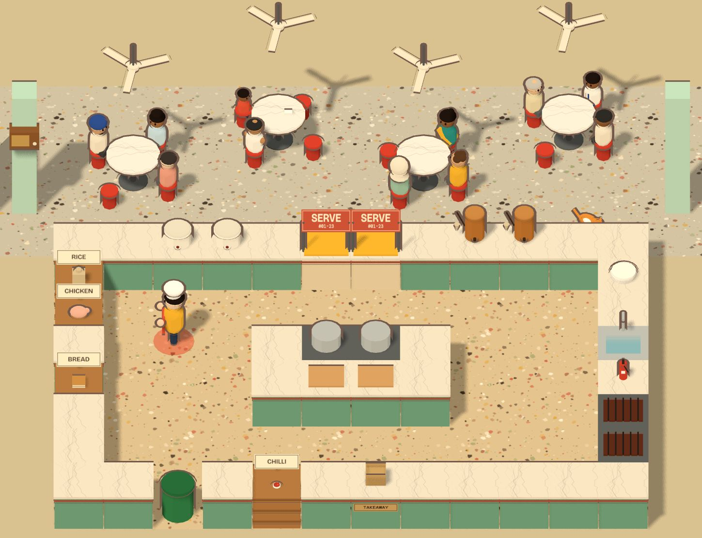

Common Ground · Culture × Tech · Singapore
The highlight
Makan Nation
Singapore is a nation that queues for its food, argues over the best chicken rice and saves a table with a packet of tissue. Makan Nation celebrates that hawker culture with a co-op kitchen that runs from the five-foot ways of the 1950s to SG100 in 2065. Cook the classics with your kakis on one keyboard or on your phones, and keep the dishes alive by serving them.
- Four eras, from 1950s street stalls to SG100, each with its own kitchen, prices and music on the stall radio
- A Hawker Passport across NEA's 129 real hawker centres, with a mentor before each stop and a quiz after it
- Customers order in six languages, and the memories players leave come back as things customers say
- Advanced: run a real hawker centre for two weeks, from menus and prices to finding successors for hawkers who retire

Four more machines for three tenses
Each one reads a slice of Singapore culture three ways: what the archives kept, what we do with it now, and what we leave for later. Three of them also feed the stall.
- Past
- Present
- Future
-
Time Capsule Radio
One dial from 1905 to 2065. Turn it and the decades go by.
- Past
- Shellac 78s and Rediffusion dialect dramas from the Internet Archive
- Present
- Live Singapore radio in four languages
- Future
- Songs sealed in a cookie tin until 2065
Plays on the Makan Nation stall radio
Switch it on -
Kopi Compiler
Every kopitiam order is a tiny program. Type one and watch it pour.
- Past
- Where each word comes from: Malay, Hokkien, Cantonese and more
- Present
- Compile orders, build drinks, survive Uncle's Rush
- Future
- Teach uncle a new word and the language grows
Writes the drink orders in Makan Nation
Order something -
Block Birthday
Every HDB block has a birthday. Find yours and throw it a party.
- Past
- The year it was built, what happened, and the songs on the radio
- Present
- Its age, floors, units and birthday twins
- Future
- A lease countdown and wishes for its 99th
Blocks at or beside a hawker centre walk you into it in Makan Nation
Find my block -
Musication
A field guide to how music rhymes across cultures and decades.
- Past
- Tunes from China, Korea, Japan, Scotland and the US that share five notes, and modes that go by many names
- Present
- Ed Sheeran's twelve notes: why pop songs keep bumping into each other
- Future
- Compare any two recordings, decades apart, note by note